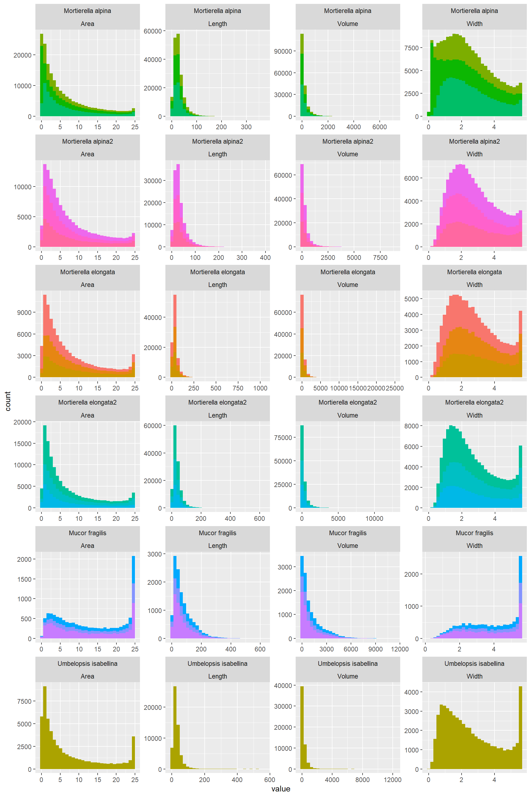
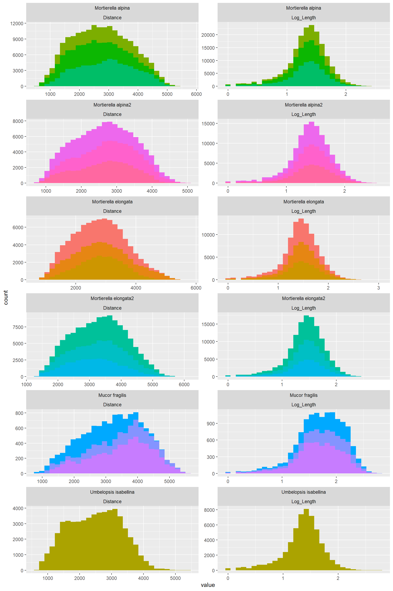
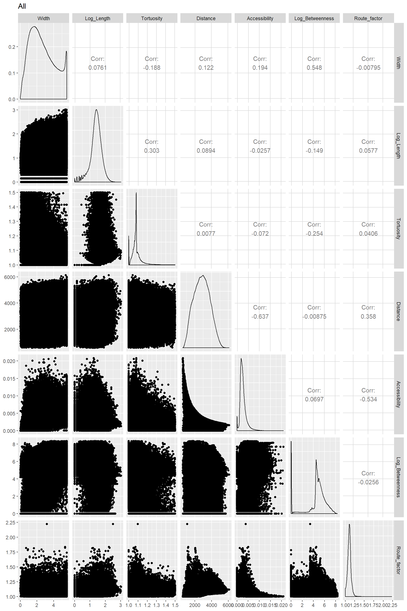

Multivariate analysis
Multivariate Analysis of Network data
Note: This tutorial is bascially the same as the on described in “Protocol_multivariate.R”. Either download the repo or, much easier, just copy the script and paste into your r script.
Intro & Basics
The question addressed here is whether network traits “cluster” according to species identity For this we are using:
- PCA: To visualize whether there is any clustering
- Difference in the correlations among variables per species
- PERMANOVA: to test difference among groups
To do that I use base R functions combined with functions from three other packages: vegan, tidyverse and RColorBrewer You might need to install those packages. You can do that via R studio or:
## Warning: package 'vegan' was built under R version 3.6.3## Loading required package: permute## Warning: package 'permute' was built under R version 3.6.3## Loading required package: lattice## This is vegan 2.5-6## -- Attaching packages ---------------------------------------------------------------------------- tidyverse 1.2.1 --## v ggplot2 3.2.1 v purrr 0.3.2
## v tibble 2.1.3 v dplyr 0.8.3
## v tidyr 1.0.0 v stringr 1.4.0
## v readr 1.3.1 v forcats 0.4.0## -- Conflicts ------------------------------------------------------------------------------- tidyverse_conflicts() --
## x dplyr::filter() masks stats::filter()
## x dplyr::lag() masks stats::lag()1. Loading files.
Note: one can load directly excel files (.xlxs) using R studio. This is a relatively new feature. I am used to the function “read.csv” for which I need to save the excel sheet I am interested as a csv file first. In this case, I saved the “edge” sheet of each excel file of each of the 6 species as .csv
First Edge files
#These lines will load all files saved as .csv in the folder "processedData" and then merging them ("row bind")
temp = list.files(path="processedData\\",pattern="*-Edge.csv")
temp<-paste("processedData\\",temp,sep = "")
myfiles = lapply(temp,function(x){read.csv(x,header = TRUE,stringsAsFactors = FALSE)} )
#myfiles[[4]]<-myfiles[[4]][,c(1:42)]
Edge_Traits<-do.call(rbind,myfiles)
Edge_Traits$Species<-NA
Edge_Traits$Species[grep("C34",Edge_Traits$name)]<-"Mortierella elongata"
Edge_Traits$Species[grep("C35",Edge_Traits$name)]<-"Umbelopsis isabellina"
Edge_Traits$Species[grep("DF19",Edge_Traits$name)]<-"Mortierella alpina"
Edge_Traits$Species[grep("DF25",Edge_Traits$name)]<-"Mortierella elongata2"
Edge_Traits$Species[grep("DF56",Edge_Traits$name)]<-"Mucor fragilis"
Edge_Traits$Species[grep("M",Edge_Traits$name)]<-"Mortierella alpina2"
#Assuming the Or_ij can be expressed from 0 to 360 degrees
Edge_Traits$Or_ij[which(Edge_Traits$Or_ij<0)]<-(Edge_Traits$Or_ij[which(Edge_Traits$Or_ij<0)]*-1)+180
Edge_Traits<-Edge_Traits[which(Edge_Traits$Type=="E"),]
#I am removing seven values with Width=0
Edge_Traits<-Edge_Traits[-which(Edge_Traits$Width==0),]Adding nodes
temp = list.files(path="processedData\\",pattern="*-Node.csv")
temp<-paste("processedData\\",temp,sep = "")
myfiles = lapply(temp,function(x){read.csv(x,header = TRUE,stringsAsFactors = FALSE,sep = ";")} )
#myfiles[[4]]<-myfiles[[4]][,c(1:42)]
Node_Traits<-do.call(rbind,myfiles)
Node_Traits$node_name_ID<-paste(Node_Traits$name,Node_Traits$node_ID,sep = "_")
#Edge_Traits_o<-Edge_Traits#Merging them
#For the first node
trial<-
left_join(Edge_Traits%>%
mutate(node_name_ID=paste(name,EndNodes_1,sep = "_")),
Node_Traits[,c("node_name_ID","node_Type","node_Degree")])## Joining, by = "node_name_ID"trial<-trial%>%
rename(node_1_name_ID=node_name_ID)%>%
rename(EndNodes_1_Type=node_Type)%>%
rename(EndNodes_1_Degree=node_Degree)
#For the second node
trial<-
left_join(trial%>%
mutate(node_name_ID=paste(name,EndNodes_2,sep = "_")),
Node_Traits[,c("node_name_ID","node_Type","node_Degree")])## Joining, by = "node_name_ID"trial<-trial%>%
rename(node_2_name_ID=node_name_ID)%>%
rename(EndNodes_2_Type=node_Type)%>%
rename(EndNodes_2_Degree=node_Degree)
Edge_Traits_o<-Edge_Traits
Edge_Traits<-trial;rm(trial)2. Getting to know the data.
2.1 How R sees the data.
It is useful to have an idea on how R recognize the data. R is an “object oriented” program language. That is, every data is an object which has certain properties. R uses these properties to categorized the object. It is useful to know what kind of object is your data because some functions only work on one object type but not in others.
str(Edge_Traits)## 'data.frame': 605130 obs. of 62 variables:
## $ name : chr "C34(1)_t11" "C34(1)_t11" "C34(1)_t11" "C34(1)_t11" ...
## $ channel : int 1 1 1 1 1 1 1 1 1 1 ...
## $ section : int 1 1 1 1 1 1 1 1 1 1 ...
## $ frame : int 1 1 1 1 1 1 1 1 1 1 ...
## $ EndNodes_1 : int 1 2 3 4 5 6 7 7 8 8 ...
## $ EndNodes_2 : int 13 4 4 13 7 8 10 12 9 51 ...
## $ node_Idx_1 : int 1237662 3257824 3296651 3348477 4526081 4680869 4720355 4720355 4823328 4771532 ...
## $ node_Idx_2 : int 5032232 3348477 3348477 5032232 4720355 4771532 4901665 5018246 4771532 7245376 ...
## $ Name : int 1 2 3 4902 4 5 4904 4903 6 4905 ...
## $ Type : chr "E" "E" "E" "E" ...
## $ Weight : num 1122.73 5.64 833.53 21.16 186.58 ...
## $ Original : num 0.601 0.469 0.305 0.611 0.282 ...
## $ Original_cv : num 0.233 0.125 0.372 0.175 0.219 ...
## $ Intensity : num 0.891 0.458 0.201 0.942 0.148 ...
## $ Intensity_cv : num 0.264 0.402 1.004 0.123 0.336 ...
## $ Gradient : num 90.7 43.9 21.4 94.3 16.9 ...
## $ Gradient_cv : num 0.297 0.365 0.818 0.193 0.255 ...
## $ Width_initial : num 4.688 2.402 1.042 4.929 0.706 ...
## $ Width_initial_cv : num 0.277 0.342 1.002 0.136 0.505 ...
## $ Width_intact : int 1 1 1 1 1 1 1 1 1 1 ...
## $ Length : num 326.17 9.24 27.07 190.56 18.73 ...
## $ Number : int 299 9 26 146 16 8 15 38 9 231 ...
## $ Midpoint : int 3128478 3296674 3374366 4281010 4616743 4719724 4811008 4772177 4797430 6053780 ...
## $ Tortuosity : num 1.08 1.15 1.21 1.06 1.07 ...
## $ Distance : num 3748 3660 3650 3625 3247 ...
## $ Width : num 4.693 2.402 0.846 4.929 0.662 ...
## $ Width_cv : num 0.278 0.342 0.965 0.136 0.487 ...
## $ Area : num 17.299 4.532 0.562 19.079 0.345 ...
## $ Volume : num 5642.2 41.89 15.22 3635.74 6.46 ...
## $ Resistance_2 : num 1122.73 5.64 833.53 21.16 186.58 ...
## $ Resistance_4 : num 1.11e+05 1.89 2.96e+04 1.07 1.18e+03 ...
## $ Resistance_2ave : num 150.8 16.3 385.2 79.9 434.6 ...
## $ Resistance_4ave : num 27.4 11.3 2152.6 13.2 3961.4 ...
## $ Or_ij : num 191.6 225 56.3 40.3 35.5 ...
## $ Or_ji : num 165 166 -90 -132 -157 ...
## $ Region : num 9084 405 683 4911 492 ...
## $ Route_factor : num 1.14 1.18 1.18 1.16 1.11 ...
## $ Accessibility : num 0.000963 0.001997 0.001093 0.002051 0.001131 ...
## $ Accessibility_ratio : num 3.61 7.31 3.99 7.44 3.67 ...
## $ Betweenness : num 28340 28340 28340 85014 28340 ...
## $ Ai : int 2 1 3 3 4 5 6 6 5 5 ...
## $ Aj : int 1 1 1 1 4 5 4 4 5 5 ...
## $ cord_Rank : int 20 2 2 18 19 15 3 17 6 16 ...
## $ length_Disconnected : int 2 1 2 2 2 1 2 2 1 1 ...
## $ length_meanDisconnect : int 3 2 3 3 3 2 3 3 2 2 ...
## $ width_Disconnected : int 5 3 1 5 1 1 1 1 2 5 ...
## $ width_meanDisconnect : int 6 4 2 6 2 2 2 2 3 6 ...
## $ volume_Disconnected : int 2 1 1 2 1 1 1 1 1 2 ...
## $ volume_meanDisconnect : int 4 2 2 4 2 2 2 2 2 4 ...
## $ resistance_Disconnected : int 3 3 3 3 4 1 4 4 1 1 ...
## $ resistance_meanDisconnect: int 4 4 4 4 5 2 5 5 2 2 ...
## $ random_Disconnected : int 5 2 2 5 5 6 3 5 6 6 ...
## $ random_meanDisconnect : int 6 3 3 6 6 7 4 6 7 7 ...
## $ spatial_Disconnected : int 14 14 14 14 14 14 14 14 14 14 ...
## $ spatial_meanDisconnect : int 15 15 15 15 15 15 15 15 15 15 ...
## $ Species : chr "Mortierella elongata" "Mortierella elongata" "Mortierella elongata" "Mortierella elongata" ...
## $ node_1_name_ID : chr "C34(1)_t11_1" "C34(1)_t11_2" "C34(1)_t11_3" "C34(1)_t11_4" ...
## $ EndNodes_1_Type : chr "E" "E" "E" "E" ...
## $ EndNodes_1_Degree : int 1 1 1 3 1 1 3 3 3 3 ...
## $ node_2_name_ID : chr "C34(1)_t11_13" "C34(1)_t11_4" "C34(1)_t11_4" "C34(1)_t11_13" ...
## $ EndNodes_2_Type : chr "E" "E" "E" "E" ...
## $ EndNodes_2_Degree : int 3 3 3 3 3 3 3 3 1 3 ...2.2. Understanding the variables and their distribution.
More impotantly, what is the distribution of the data? To simply get means, min, max per fungal species per variable:
aggregate(
Edge_Traits[,
c("Width","Length","Area","Volume","Resistance_2ave","Tortuosity","Distance",
"Accessibility","Betweenness","Route_factor","Or_ij")],
by=list(Edge_Traits[which(Edge_Traits$Type=="E"),]$name),
mean)#Here you can write different functions: min, max, median. range and summmary is also good because it## Group.1 Width Length Area Volume Resistance_2ave
## 1 C34(1)_t11 2.486416 35.62635 6.484219 261.0451 185.76146
## 2 C34(2)_t23 2.842553 38.28422 7.800379 355.1597 95.65841
## 3 C34(3)_t23 3.001343 42.16709 8.648350 423.5895 101.15995
## 4 C35(4)_t30 2.586732 30.21901 7.302022 212.3975 218.03514
## 5 DF19(1)_t11 2.495999 33.08385 6.423266 236.8064 236.37738
## 6 DF19(2)_t11 2.116843 25.48389 5.584297 156.0670 1346.55560
## 7 DF19(3)_t11 2.547124 27.84863 6.594102 198.2312 168.83730
## 8 DF25(4)_t08 2.490902 35.03497 6.422615 252.6609 152.65753
## 9 DF25(5)_t11 2.879607 36.55567 8.144890 321.9221 105.70673
## 10 DF25(6)_t11 2.689017 35.93821 7.304261 287.6657 135.07033
## 11 DF56(4)_t11 3.942069 79.73737 13.818083 1209.7395 74.84091
## 12 DF56(5)_t09 3.972351 85.11932 13.941104 1343.8569 72.07603
## 13 DF56(6)_t09 3.609932 70.31851 12.054374 984.2309 88.14096
## 14 M(4)_t13 2.860984 31.40790 7.721019 272.7007 544.66314
## 15 M(5)_t13_c 2.587538 34.63359 6.684309 251.3199 132.11649
## 16 M(6)_t13 2.850257 36.04745 7.946164 304.1161 104.27262
## Tortuosity Distance Accessibility Betweenness Route_factor Or_ij
## 1 1.092237 2730.960 0.002287540 1081660.47 1.116972 121.8803
## 2 1.085628 2870.466 0.002494275 784964.46 1.131151 121.6303
## 3 1.085478 2837.314 0.002518414 760376.74 1.097317 123.7604
## 4 1.087140 2485.268 0.003056472 2107936.15 1.085434 120.4299
## 5 1.092123 2776.072 0.002542657 1610009.10 1.107132 121.0331
## 6 1.126633 2575.005 0.002288031 2251847.21 1.121702 118.4352
## 7 1.091932 2913.884 0.002331193 2707310.98 1.103961 120.2419
## 8 1.088899 3378.191 0.002619193 1279655.41 1.072414 123.9226
## 9 1.086190 3354.245 0.002940076 1097108.80 1.092419 124.2263
## 10 1.086563 3140.293 0.003111686 894980.82 1.079164 123.5433
## 11 1.101663 2732.423 0.003735935 61335.67 1.143124 131.3189
## 12 1.106022 3401.546 0.002962687 45846.92 1.167376 131.3435
## 13 1.109570 3489.348 0.002672755 132083.01 1.170059 128.0034
## 14 1.085376 2552.801 0.002946290 1277518.99 1.129328 120.5754
## 15 1.088701 2805.298 0.002676110 1243594.56 1.127154 123.4909
## 16 1.091450 2637.110 0.003290793 1186738.63 1.114236 121.8883 #gets you more than one summary statistics, but it can be confusing with so much data.I had some issues understanding what Resistance is. Playing with the following code allowed me to determine that Resistance_2ave = 10*(Length)/width^2
summary(Edge_Traits$Resistance_2ave)
length(which(Edge_Traits$Width_intact==0))
Edge_Traits%>%
#filter(Area!=0)%>%
#filter(Resistance_2ave>500)%>%
mutate(MyResistance=Length/(Width/2)^2)%>%
mutate(Factor=Resistance_2ave/MyResistance)%>%
select(Species,name,Length,Width,Resistance_2ave)%>%
ggplot()+
aes(y=Resistance_2ave,x=name,fill=name)+
geom_boxplot()+
facet_grid(. ~ Species, scales = "free")+
theme(legend.position = "none")
length(which(Edge_Traits$Resistance_2ave>500))## [1] "name" "channel"
## [3] "section" "frame"
## [5] "EndNodes_1" "EndNodes_2"
## [7] "node_Idx_1" "node_Idx_2"
## [9] "Name" "Type"
## [11] "Weight" "Original"
## [13] "Original_cv" "Intensity"
## [15] "Intensity_cv" "Gradient"
## [17] "Gradient_cv" "Width_initial"
## [19] "Width_initial_cv" "Width_intact"
## [21] "Length" "Number"
## [23] "Midpoint" "Tortuosity"
## [25] "Distance" "Width"
## [27] "Width_cv" "Area"
## [29] "Volume" "Resistance_2"
## [31] "Resistance_4" "Resistance_2ave"
## [33] "Resistance_4ave" "Or_ij"
## [35] "Or_ji" "Region"
## [37] "Route_factor" "Accessibility"
## [39] "Accessibility_ratio" "Betweenness"
## [41] "Ai" "Aj"
## [43] "cord_Rank" "length_Disconnected"
## [45] "length_meanDisconnect" "width_Disconnected"
## [47] "width_meanDisconnect" "volume_Disconnected"
## [49] "volume_meanDisconnect" "resistance_Disconnected"
## [51] "resistance_meanDisconnect" "random_Disconnected"
## [53] "random_meanDisconnect" "spatial_Disconnected"
## [55] "spatial_meanDisconnect" "Species"
## [57] "node_1_name_ID" "EndNodes_1_Type"
## [59] "EndNodes_1_Degree" "node_2_name_ID"
## [61] "EndNodes_2_Type" "EndNodes_2_Degree"About tortuosity
tapply(Edge_Traits$Tortuosity,Edge_Traits$name,summary)
tapply(Edge_Traits$Tortuosity,Edge_Traits$name,function(x){length(which(x>1.5))})
tapply(Edge_Traits$Tortuosity,Edge_Traits$name,function(x){length(which(x>1.5))/length(x)})
tapply(Edge_Traits$Tortuosity,Edge_Traits$name,function(x){length(which(x>1.5))})
tapply(Edge_Traits$Tortuosity,Edge_Traits$name,length)Hist_Length_Tortuosity_4<-
Edge_Traits%>%
filter(Tortuosity<1.5)%>%
select(c("name","Species","Width","Length","Area","Volume","Resistance_2ave","Tortuosity","Distance",
"Accessibility","Betweenness","Route_factor","Or_ij"))%>%
group_by(name)%>%
gather(key=variable,
value=value,Width:Or_ij)%>%
filter(variable %in% c("Length","Tortuosity"))%>%#4_Tortuosity has little variation and depends on Length
ggplot()+
aes(value,fill=name)+
geom_histogram()+
facet_wrap(Species ~ variable, scales = "free",nrow = 6,ncol = 2)+
theme(legend.position = "none")Visualizing the distribution of the data
Note: I am grouping the variables in different sets. Each set represents (to me) an intuitively logical set of related variables
Hist_Width_Length_Distance_1## `stat_bin()` using `bins = 30`. Pick better value with `binwidth`.Hist_Width_Length_Area_Vol_2## `stat_bin()` using `bins = 30`. Pick better value with `binwidth`.
Hist_Width_Length_Resistance_3## `stat_bin()` using `bins = 30`. Pick better value with `binwidth`.Hist_Length_Tortuosity_4## `stat_bin()` using `bins = 30`. Pick better value with `binwidth`.Hist_Resistance_Accessibility_Betweenness_5## `stat_bin()` using `bins = 30`. Pick better value with `binwidth`.Hist_Distance_Route_factor_6## `stat_bin()` using `bins = 30`. Pick better value with `binwidth`.Form these plots one learns that:
- Some variables are mathematically correlated:
- Area= (pi/4)*Width^2
- Volume= (pi/4)(Width^2)Length
Resitance= 10*Length/Width^2
- Thus for subsequent analysis I will only use variables that are not (at least so easily) related to each other:
- Width, Lenght, Tortuosity, Distance, Accessibility, Betweenness, Route Factor
- The distribution of the data for a variable is similar across ose species. In summary:
- Width: Varies from almost uniform to normal to bimodal to right skewed, and this depends on the species
- Length: left skewed
- Torturosity: “A bit” normal, still data is concentrated to the left. It is completely left skewed with tortuosity values higher than 1.5 are included which only represent less than 1% of the data
- Distance: Normally distributed
- Accessibility: A bit" normal, still data is concentrated to the left
- Betwenness: Highly right skewed
- Route Factor: A bit" normal, still data is concentrated to the left
What kind of transformations are needed for betweeness, Length (the ones that are clearly left-skewed) and Tortuosity
Betweenness can be log transformed (adding 1)
Edge_Traits%>%
#filter(Tortuosity<1.5)%>%
select(c("name","Species","Width","Length","Area","Volume","Resistance_2ave","Tortuosity","Distance",
"Accessibility","Betweenness","Route_factor","Or_ij"))%>%
mutate(Log_Betweenness=log10(Betweenness+1))%>%
group_by(name)%>%
gather(key=variable,
value=value,Width:Log_Betweenness)%>%
filter(variable %in% c("Log_Betweenness","Distance"))%>%#4_Tortuosity has little variation and depends on Length
ggplot()+
aes(value,fill=name)+
geom_histogram()+
facet_wrap(Species ~ variable, scales = "free",nrow = 6,ncol = 2)+
theme(legend.position = "none")Length can be log transformed and that makes it very normally ditributed
Edge_Traits%>%
#filter(Tortuosity<1.5)%>%
select(c("name","Species","Width","Length","Area","Volume","Resistance_2ave","Tortuosity","Distance",
"Accessibility","Betweenness","Route_factor","Or_ij"))%>%
mutate(Log_Length=log10(Length))%>%
group_by(name)%>%
gather(key=variable,
value=value,Width:Log_Length)%>%
filter(variable %in% c("Log_Length","Distance"))%>%#4_Tortuosity has little variation and depends on Length
ggplot()+
aes(value,fill=name)+
geom_histogram()+
facet_wrap(Species ~ variable, scales = "free",nrow = 6,ncol = 2)+
theme(legend.position = "none")
2.3. Understanding relationships among variables.
Before doing a correlogram of everything with everythin. Here I want to test specific relationships that I think might be interesting biologically
LENGTH AND WIDTH
Length_Width
Log_Length_WidthThe only thing I can tell from this one is that the thinnest hyphae have medium size length. Really long hyphae cannot be thin. There seems to be a lower boundary: the thinnest hypahe get longer up to a point where it is impossible to go thinniest and long. Note! Assuming this follows the two are connected by a power law
LENGTH; WIDTH AND DISTANCE
Log_Length_DistanceOut of this one is clear that there is no relationship between length and distance
RESISTANCE WIDTH AND LENGTH (THIS IS MAINLY TO TEST THE MATHEMATICAL RELATIONSHIP AMONG THEM)
Log_Resistance_Width_LengthThis plot confirms the relationship between resistance and lenght and width
BETWEENNESS AND DISTANCE
Log_Betweenness_Distance
ROUTE FACTOR AND WIDTH
RouteFactor_WidthCorrelograms
library(GGally)Correlograms for each species
Edge_Traits%>%
filter(Species=="Mortierella elongata")%>%
filter(Tortuosity<1.5)%>%
mutate(Log_Betweenness=log10(Betweenness+1))%>%
mutate(Log_Length=log10(Length))%>%
mutate(Species=as.factor(Species))%>%
select(c("Width","Log_Length","Tortuosity","Distance",
"Accessibility","Log_Betweenness","Route_factor","Species"))%>%
ggpairs(title="Mortierella elongata",columns = 1:7,ggplot2::aes(color=Species))Edge_Traits%>%
filter(Species=="Umbelopsis isabellina")%>%
filter(Tortuosity<1.5)%>%
mutate(Log_Betweenness=log10(Betweenness+1))%>%
mutate(Log_Length=log10(Length))%>%
mutate(Species=as.factor(Species))%>%
select(c("Width","Log_Length","Tortuosity","Distance",
"Accessibility","Log_Betweenness","Route_factor","Species"))%>%
ggpairs(title="Umbelopsis isabellina",columns = 1:7,ggplot2::aes(color=Species))Edge_Traits%>%
filter(Species=="Mortierella alpina")%>%
filter(Tortuosity<1.5)%>%
mutate(Log_Betweenness=log10(Betweenness+1))%>%
mutate(Log_Length=log10(Length))%>%
mutate(Species=as.factor(Species))%>%
select(c("Width","Log_Length","Tortuosity","Distance",
"Accessibility","Log_Betweenness","Route_factor","Species"))%>%
ggpairs(title="Mortierella alpina",columns = 1:7,ggplot2::aes(color=Species))Edge_Traits%>%
filter(Species=="Mortierella elongata2")%>%
filter(Tortuosity<1.5)%>%
mutate(Log_Betweenness=log10(Betweenness+1))%>%
mutate(Log_Length=log10(Length))%>%
mutate(Species=as.factor(Species))%>%
select(c("Width","Log_Length","Tortuosity","Distance",
"Accessibility","Log_Betweenness","Route_factor","Species"))%>%
ggpairs(title="Mortierella elongata2",columns = 1:7,ggplot2::aes(color=Species))Edge_Traits%>%
filter(Species=="Mucor fragilis")%>%
filter(Tortuosity<1.5)%>%
mutate(Log_Betweenness=log10(Betweenness+1))%>%
mutate(Log_Length=log10(Length))%>%
mutate(Species=as.factor(Species))%>%
select(c("Width","Log_Length","Tortuosity","Distance",
"Accessibility","Log_Betweenness","Route_factor","Species"))%>%
ggpairs(title="Mucor fragilis",columns = 1:7,ggplot2::aes(color=Species))Edge_Traits%>%
filter(Species=="Mortierella alpina2")%>%
filter(Tortuosity<1.5)%>%
mutate(Log_Betweenness=log10(Betweenness+1))%>%
mutate(Log_Length=log10(Length))%>%
mutate(Species=as.factor(Species))%>%
select(c("Width","Log_Length","Tortuosity","Distance",
"Accessibility","Log_Betweenness","Route_factor","Species"))%>%
ggpairs(title="Mortierella alpina2",columns = 1:7,ggplot2::aes(color=Species))Correlograms for all species together
Edge_Traits%>%
#filter(Species=="Mortierella elongata")%>%
filter(Tortuosity<1.5)%>%
mutate(Log_Betweenness=log10(Betweenness+1))%>%
mutate(Log_Length=log10(Length))%>%
mutate(Species=as.factor(Species))%>%
select(c("Width","Log_Length","Tortuosity","Distance",
"Accessibility","Log_Betweenness","Route_factor","Species"))%>%
ggpairs(title="All",columns = 1:7)
Visualizing and testing the clustering of species in trait space
A model with information at the hyphal level showed to explain very little the variation, thus it is not worth using it. Thus a better option is to use mean values
## Call: rda(formula = Descriptive_traits[, c("Width", "Log_Length",
## "Tortuosity", "Log_Betweenness")] ~ Species + Condition(Distance),
## data = Descriptive_traits, scale = TRUE)
##
## Inertia Proportion Rank
## Total 4.00000 1.00000
## Conditional 0.71843 0.17961 1
## Constrained 2.92904 0.73226 4
## Unconstrained 0.35253 0.08813 4
## Inertia is correlations
##
## Eigenvalues for constrained axes:
## RDA1 RDA2 RDA3 RDA4
## 2.6395 0.2720 0.0149 0.0027
##
## Eigenvalues for unconstrained axes:
## PC1 PC2 PC3 PC4
## 0.25440 0.04622 0.03951 0.01240## RDA1 RDA2
## Eigenvalue 2.6394842 0.27196022
## Proportion Explained 0.8043352 0.08287497
## Cumulative Proportion 0.8043352 0.88721012## Permutation test for rda under reduced model
## Terms added sequentially (first to last)
## Permutation: free
## Number of permutations: 999
##
## Model: rda(formula = Descriptive_traits[, c("Width", "Log_Length", "Tortuosity", "Log_Betweenness")] ~ Species + Condition(Distance), data = Descriptive_traits, scale = TRUE)
## Df Variance F Pr(>F)
## Species 5 2.92904 14.956 0.001 ***
## Residual 9 0.35253
## ---
## Signif. codes: 0 '***' 0.001 '**' 0.01 '*' 0.05 '.' 0.1 ' ' 1#### Results from RDA
Proportion of data explained by constrained axes
Model_descriptive_traits## Call: rda(formula = Descriptive_traits[, c("Width", "Log_Length",
## "Tortuosity", "Log_Betweenness")] ~ Species + Condition(Distance),
## data = Descriptive_traits, scale = TRUE)
##
## Inertia Proportion Rank
## Total 4.00000 1.00000
## Conditional 0.71843 0.17961 1
## Constrained 2.92904 0.73226 4
## Unconstrained 0.35253 0.08813 4
## Inertia is correlations
##
## Eigenvalues for constrained axes:
## RDA1 RDA2 RDA3 RDA4
## 2.6395 0.2720 0.0149 0.0027
##
## Eigenvalues for unconstrained axes:
## PC1 PC2 PC3 PC4
## 0.25440 0.04622 0.03951 0.01240Proportion of data explained by the first and second RDA axes
## RDA1 RDA2
## Eigenvalue 2.6394842 0.27196022
## Proportion Explained 0.8043352 0.08287497
## Cumulative Proportion 0.8043352 0.88721012Significance testing of the RDA (permutation based test of vegan package)
## Permutation test for rda under reduced model
## Terms added sequentially (first to last)
## Permutation: free
## Number of permutations: 999
##
## Model: rda(formula = Descriptive_traits[, c("Width", "Log_Length", "Tortuosity", "Log_Betweenness")] ~ Species + Condition(Distance), data = Descriptive_traits, scale = TRUE)
## Df Variance F Pr(>F)
## Species 5 2.92904 14.956 0.001 ***
## Residual 9 0.35253
## ---
## Signif. codes: 0 '***' 0.001 '**' 0.01 '*' 0.05 '.' 0.1 ' ' 1Clustering based on descriptive traits: “Width”,“Log_Length”,“Tortuosity”,“Log_Betweenness”
Descriptive_traits %>%
ggplot()+
aes(x=RDA1,y=RDA2,color=Species,label=Species) +
geom_text() +
scale_color_viridis_d()+
labs(y="RDA2 8%",x="RDA1 80%")+
my_themeTransport to tips traits
All relationships above consider each hyphal segment as separate replicate. This information is meaningful particularly for what I call the descriptive traits (width, lenght) but for the transport ones (accessibility) this is a bit misleading as the transport from on hyphal segment to the next one is not going to change that much (or at all). Thus I am going to make a new analysis, this time only based on “Routes”. That is the wholde path from the center of the inoculum to an endpoint.
## [1] "name" "channel"
## [3] "section" "frame"
## [5] "EndNodes_1" "EndNodes_2"
## [7] "node_Idx_1" "node_Idx_2"
## [9] "Name" "Type"
## [11] "Weight" "Original"
## [13] "Original_cv" "Intensity"
## [15] "Intensity_cv" "Gradient"
## [17] "Gradient_cv" "Width_initial"
## [19] "Width_initial_cv" "Width_intact"
## [21] "Length" "Number"
## [23] "Midpoint" "Tortuosity"
## [25] "Distance" "Width"
## [27] "Width_cv" "Area"
## [29] "Volume" "Resistance_2"
## [31] "Resistance_4" "Resistance_2ave"
## [33] "Resistance_4ave" "Or_ij"
## [35] "Or_ji" "Region"
## [37] "Route_factor" "Accessibility"
## [39] "Accessibility_ratio" "Betweenness"
## [41] "Ai" "Aj"
## [43] "cord_Rank" "length_Disconnected"
## [45] "length_meanDisconnect" "width_Disconnected"
## [47] "width_meanDisconnect" "volume_Disconnected"
## [49] "volume_meanDisconnect" "resistance_Disconnected"
## [51] "resistance_meanDisconnect" "random_Disconnected"
## [53] "random_meanDisconnect" "spatial_Disconnected"
## [55] "spatial_meanDisconnect" "Species"
## [57] "node_1_name_ID" "EndNodes_1_Type"
## [59] "EndNodes_1_Degree" "node_2_name_ID"
## [61] "EndNodes_2_Type" "EndNodes_2_Degree"Histograms of the transport traits: “Distance”,“Accessibility”,“Route_factor”,“Route_Length”
Re_org_2%>%
filter(EndNodes_1_Degree==1|EndNodes_2_Degree==1)%>%
filter(variable %in% c("Distance","Accessibility","Route_factor","Route_Length"))%>%#1_The completely indepedent variables
ggplot()+
aes(value,fill=name)+
geom_histogram()+
facet_wrap(Species ~ variable, scales = "free",nrow = 6,ncol = 4)+
theme(legend.position = "none")## `stat_bin()` using `bins = 30`. Pick better value with `binwidth`.Relationship among the transport traits
Edge_Traits%>%
mutate(Route_Length=Distance*Route_factor)%>%
filter(EndNodes_1_Degree==1|EndNodes_2_Degree==1)%>%
ggplot()+
aes(y=Route_Length,x=Distance,color=name)+
geom_point()+
#geom_hex() +
#geom_bin2d()+
geom_point(alpha=0.8,size=2)+
facet_wrap(. ~ Species, scales = "free",nrow = 6,ncol = 3)+
theme(legend.position = "none")Edge_Traits%>%
mutate(Route_Length=Distance*Route_factor)%>%
filter(EndNodes_1_Degree==1|EndNodes_2_Degree==1)%>%
ggplot()+
aes(x=Route_Length,y=Accessibility,color=name)+
geom_point()+
#geom_hex() +
#geom_bin2d()+
geom_point(alpha=0.8,size=2)+
facet_wrap(. ~ Species, scales = "free",nrow = 6,ncol = 3)+
theme(legend.position = "none")Making correlograms for these transport traits
Edge_Traits%>%
mutate(Route_Length=Distance*Route_factor)%>%
filter(EndNodes_1_Degree==1|EndNodes_2_Degree==1)%>%
mutate(Species=as.factor(Species))%>%
select(c("Distance","Accessibility","Route_factor","Route_Length","Species"))%>%
ggpairs(title="All",columns = 1:4,ggplot2::aes(color=Species))Comment from Mark: Betweenness values less than one are a proxy of links that are not particularly useful because that route is never being used
Clustering and testing the signficance of the clustering for these transport traits
Model_transport_traits## Call: rda(formula = Transport_traits[, c("Distance",
## "Accessibility", "Route_factor", "Route_Length")] ~ Species, data
## = Transport_traits, scale = TRUE)
##
## Inertia Proportion Rank
## Total 4.00 1.00
## Constrained 2.76 0.69 4
## Unconstrained 1.24 0.31 4
## Inertia is correlations
##
## Eigenvalues for constrained axes:
## RDA1 RDA2 RDA3 RDA4
## 1.6710 0.8694 0.2194 0.0000
##
## Eigenvalues for unconstrained axes:
## PC1 PC2 PC3 PC4
## 0.9027 0.2059 0.1314 0.0002# Inertia Proportion Rank
# Total 4.00 1.00
# Constrained 2.76 0.69 4
# Unconstrained 1.24 0.31 4
# Inertia is correlations summary(Model_transport_traits)[["cont"]][["importance"]][,c(1:2)]## RDA1 RDA2
## Eigenvalue 1.6709939 0.8693697
## Proportion Explained 0.4177485 0.2173424
## Cumulative Proportion 0.4177485 0.6350909# RDA1 RDA2
# Eigenvalue 1.6709939 0.8693697
# Proportion Explained 0.4177485 0.2173424
# Cumulative Proportion 0.4177485 0.6350909anova.cca(Model_transport_traits,by="term")## Permutation test for rda under reduced model
## Terms added sequentially (first to last)
## Permutation: free
## Number of permutations: 999
##
## Model: rda(formula = Transport_traits[, c("Distance", "Accessibility", "Route_factor", "Route_Length")] ~ Species, data = Transport_traits, scale = TRUE)
## Df Variance F Pr(>F)
## Species 5 2.7598 4.4506 0.001 ***
## Residual 10 1.2402
## ---
## Signif. codes: 0 '***' 0.001 '**' 0.01 '*' 0.05 '.' 0.1 ' ' 1# Df Variance F Pr(>F)
# Species 5 2.7598 4.4506 0.001 ***
# Residual 10 1.2402
#plot(Model_transport_traits$Ybar[,1],Transport_traits$Distance)Clustering based on transport traits (mean values per replicate)
temporal<-as.data.frame(scores(Model_transport_traits,display = "sites",scaling = "sites",choices=c(1,2)))
Transport_traits<-cbind(Transport_traits,temporal);rm(temporal)
Transport_traits %>%
ggplot()+
aes(x=RDA1,y=RDA2,color=Species,label=Species) +
geom_text() +
scale_color_viridis_d()+
labs(y="RDA2 21%",x="RDA1 41%")+
my_themeTo do list:
Check how to deal with not anastomosis from the images… maybe removing the node degree higher or equal than 3… also check whether i can measure route factor in R
Revise again how do I know that the traits are not not adjusted to micrometers but pixels
Is mean length the same as the total length of the mycelium divided by the number of hyphae
Check again what is Ybar from the output of vegan
Check whether I got new data on the problmatic species including umpellopsis
Maybe the twist here is how to tell appart phenotypically species that are closely related to each other. I should ask Anika what is the evidence for the mucoromycota species to behave differently.
Think how to treat betweenness